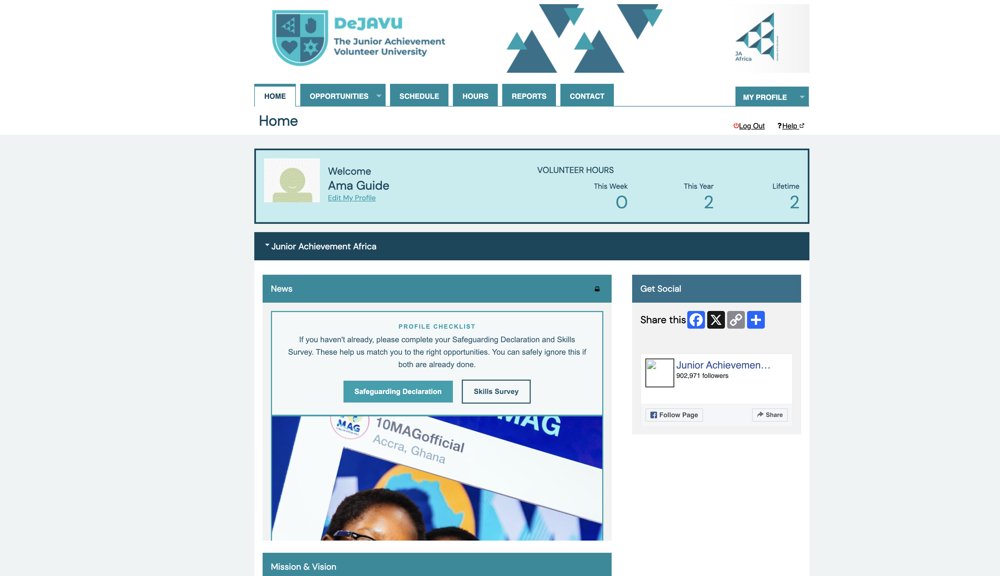
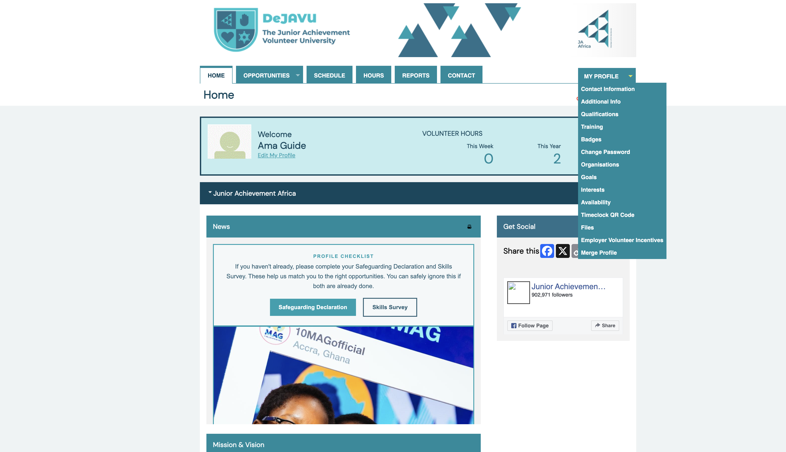
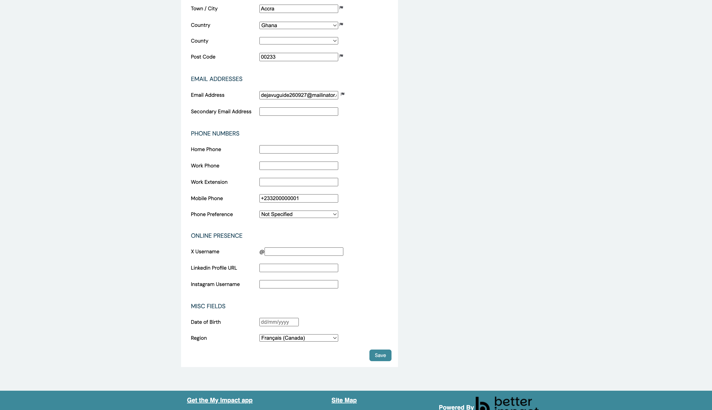

Volunteer guide
Audience · VolunteerChange Your Interface Language
Set your preferred language for menus, buttons, and messages in DeJAVU. This is controlled by the Region field on your profile. Region also changes how dates and times appear. Your choice only affects your own view — not other volunteers.
Path: My Profile → Contact Information → Region · Portal: volunteers.ja-africa.org
Log in and open My Profile
Sign in to DeJAVU. In the top menu, click My Profile.

My ProfileYou can also click Edit My Profile under your name on the home page — that opens Contact Information directly.
Choose Contact Information
In the My Profile menu, click Contact Information.

Contact InformationFind Region under Misc Fields
Scroll down the Contact Information page to Misc Fields. The Region dropdown sets both language and date/time format.
English (UK) — DD/MM/YYYY and 24-hour time English (USA) — MM/DD/YYYY Français, Español, Português also available
Choose a language and Save
Open Region, pick the language/region you want (for example Français (Canada) or Español), then click Save.

Language choice SaveAfter you save, refresh the page if menus still show the old language. Only the platform interface changes — opportunity names and other text written by JA Africa stay in the language they were created in.